Ch 0
CPU 架構
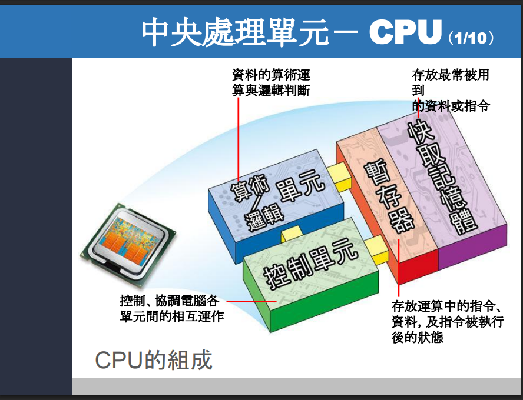
處理單元（CPU, Central Processing Unit，中央處理單元）的功能小整理
CPU 可以想成電腦的「大腦」，主要負責讀指令、判斷要做什麼、真的去運算、再把結果存起來。課堂投影片把它拆成 4 個重點部分：控制單元、算術邏輯單元、暫存器、快取記憶體。
1. 控制單元（Control Unit, CU）
功能：控制與協調各單元工作。 它會負責擷取指令（fetch）、解碼指令（decode），再指揮其他部分照步驟執行。簡單講，它像「指揮官」。這也符合一般處理器介紹中對控制單元的定義。 (Arm)
2. 算術邏輯單元（Arithmetic Logic Unit, ALU，算術邏輯單元）
功能：做算術運算與邏輯判斷。 例如加減乘除、比大小、AND、OR 這些都由 ALU 處理。它像「真正動手算的人」。 (Arm)
3. 暫存器（Register）
功能：暫時存放目前正在處理的資料、指令、位址與狀態。 例如：
- PC（Program Counter，程式計數器）：放下一個要執行的指令位址
- IR（Instruction Register，指令暫存器）：放目前正在執行的指令
- Flag Register（旗標暫存器）：放執行後的狀態
- Address Register（位址暫存器）：放要去主記憶體存取的位置 這些內容在你的投影片有直接列出。
4. 快取記憶體（Cache）
功能：先存放常用的資料或指令，讓 CPU 更快拿到。 它比主記憶體（RAM）快，所以能減少等待時間。投影片也提到常見有 L1、L2、L3 cache。這和官方對 cache 的說明一致：cache 是靠近處理器核心的高速記憶體，用來放常用資料與指令。 (Arm)
暫存器的種類
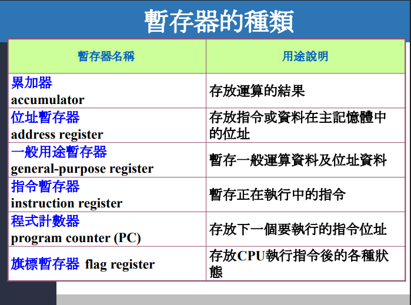
| 內容儲存 | 位置儲存 | |
|---|---|---|
| 資料(數值等) | GPR的R1、R2.. 一般用途暫存器 (存成變數) | AR 位置暫存器 |
| 運算結果(A+B=C的C) | ACC 累加器 | X |
| 指令 | IR 指令暫存器 | AR 位置暫存器 |
| 下一個指令 | X | PC 程式計數器 |
| 狀態結果 | FR | X |
先宣告變數
// =========================
// 先定義一個簡化版指令格式
// =========================
struct Instruction {
string op; // 指令名稱，例如 "LOAD_R1", "LOAD_ACC", "ADD", "STORE"
int addr; // 指令中提到的記憶體位址，例如 100, 104, 108
};
// =========================
// CPU 內部暫存器
// =========================
int ACC = 0; // Accumulator：累加器，放目前運算結果
// GPRs：一般用途暫存器群組
int R1 = 0;
int R2 = 0;
int R3 = 0;
int AR = 0; // Address Register：位址暫存器，本次要去記憶體哪裡
int PC = 200; // Program Counter：下一條指令位址
Instruction IR; // Instruction Register：目前抓到的指令
// 旗標暫存器（這裡只先模擬兩個 bit）
bool ZF = false; // Zero Flag：結果是否為 0
bool CF = false; // Carry Flag：是否有進位（這次先不特別處理）
// =========================
// 記憶體
// =========================
// 指令記憶體：放程式
map<int, Instruction> InstrMem;
// 資料記憶體：放數值
map<int, int> DataMem;
把記憶體內容先放好
// =========================
// 初始化資料記憶體
// =========================
DataMem[100] = 7;
DataMem[104] = 5;
DataMem[108] = 0; // 等等要把結果寫回來
// =========================
// 初始化指令記憶體
// =========================
InstrMem[200] = {"LOAD_R1", 100}; // R1 = M[100]
InstrMem[204] = {"LOAD_ACC", 104}; // ACC = M[104]
InstrMem[208] = {"ADD_ACC_R1", 0}; // ACC = ACC + R1
InstrMem[212] = {"STORE_ACC", 108}; // M[108] = ACC
開始模擬執行流程
第 1 條指令：LOAD_R1, 100
// =========================
// 第 1 條指令：LOAD_R1, 100
// =========================
// ---- Fetch（抓指令）----
// PC 裡放的是「下一條指令位址」
AR = PC; // 先把 PC 的值送到 AR，表示這次要去抓位址 200 的內容
IR = InstrMem[AR]; // 把位址 200 的指令抓進 IR
PC = PC + 4; // 下一條指令在 204
// 現在：IR = {"LOAD_R1", 100}
// ---- Decode + Execute（解碼 + 執行）----
// 這條指令要去資料記憶體位址 100 讀資料
AR = IR.addr; // AR = 100，這次 AR 不再放指令位址，而是放資料位址
R1 = DataMem[AR]; // R1 = M[100] = 7
// 這一步做完後：
// ACC = 0
// R1 = 7
// R2 = 0
// R3 = 0
// AR = 100
// PC = 204
// IR = {"LOAD_R1", 100}
第 2 條指令：LOAD_ACC, 104
// =========================
// 第 2 條指令：LOAD_ACC, 104
// =========================
// ---- Fetch（抓指令）----
AR = PC; // AR = 204，先去抓下一條指令
IR = InstrMem[AR]; // IR = {"LOAD_ACC", 104}
PC = PC + 4; // PC = 208
// ---- Decode + Execute（解碼 + 執行）----
AR = IR.addr; // AR = 104，改成這次要去抓資料的位置
ACC = DataMem[AR]; // ACC = M[104] = 5
// 這一步做完後：
// ACC = 5
// R1 = 7
// R2 = 0
// R3 = 0
// AR = 104
// PC = 208
// IR = {"LOAD_ACC", 104}
備註：IR.addr是啥
IR.addr 是為了教學方便，幫 IR（Instruction Register，指令暫存器）這個結構加的一個欄位名稱。
第 3 條指令：ADD_ACC_R1
// =========================
// 第 3 條指令：ADD_ACC_R1
// =========================
// ---- Fetch（抓指令）----
AR = PC; // AR = 208，抓位址 208 的指令
IR = InstrMem[AR]; // IR = {"ADD_ACC_R1", 0}
PC = PC + 4; // PC = 212
// ---- Execute（執行）----
// 這條是純暫存器運算，不需要再讀資料記憶體
ACC = ACC + R1; // ACC = 5 + 7 = 12
// 更新旗標
ZF = (ACC == 0); // 12 不是 0，所以 ZF = false
CF = false; // 這次先簡化成沒有進位
// 這一步做完後：
// ACC = 12
// R1 = 7
// R2 = 0
// R3 = 0
// PC = 212
// IR = {"ADD_ACC_R1", 0}
// ZF = false
// CF = false
第 4 條指令：STORE_ACC, 108
// =========================
// 第 4 條指令：STORE_ACC, 108
// =========================
// ---- Fetch（抓指令）----
AR = PC; // AR = 212，先抓位址 212 的指令
IR = InstrMem[AR]; // IR = {"STORE_ACC", 108}
PC = PC + 4; // PC = 216
// ---- Decode + Execute（解碼 + 執行）----
AR = IR.addr; // AR = 108，這次要寫回資料到位址 108
DataMem[AR] = ACC; // M[108] = ACC = 12
// 最後結果：
// DataMem[100] = 7
// DataMem[104] = 5
// DataMem[108] = 12
整段完整版本
#include <map>
#include <string>
using namespace std;
struct Instruction {
string op;
int addr;
};
int main() {
// =========================*
// CPU 暫存器*
// =========================*
int ACC = 0; // 累加器：放目前運算結果*
// GPRs：一般用途暫存器群組*
int R1 = 0;
int R2 = 0;
int R3 = 0;
int AR = 0; // 位址暫存器：本次要去記憶體哪裡*
int PC = 200; // 程式計數器：下一條指令位址*
Instruction IR; // 指令暫存器：目前抓到的指令*
bool ZF = false; // Zero Flag*
bool CF = false; // Carry Flag*
// =========================*
// 記憶體*
// =========================*
map<int, Instruction> InstrMem;
map<int, int> DataMem;
// 資料記憶體*
DataMem[100] = 7;
DataMem[104] = 5;
DataMem[108] = 0;
// 指令記憶體*
InstrMem[200] = {"LOAD_R1", 100};
InstrMem[204] = {"LOAD_ACC", 104};
InstrMem[208] = {"ADD_ACC_R1", 0};
InstrMem[212] = {"STORE_ACC", 108};
// =========================*
// 1) LOAD_R1, 100*
// =========================*
AR = PC; // 先把 PC 送到 AR，表示這次去抓位址 200 的指令*
IR = InstrMem[AR]; // IR = InstrMem[200]*
PC = PC + 4; // 下一條指令位址變成 204*
AR = IR.addr; // 這條指令要去資料位址 100*
R1 = DataMem[AR]; // R1 = M[100] = 7*
// =========================*
// 2) LOAD_ACC, 104*
// =========================*
AR = PC; // 抓位址 204 的指令*
IR = InstrMem[AR]; // IR = InstrMem[204]*
PC = PC + 4; // 下一條指令位址變成 208*
AR = IR.addr; // 這條指令要去資料位址 104*
ACC = DataMem[AR]; // ACC = M[104] = 5*
// =========================*
// 3) ADD_ACC_R1*
// =========================*
AR = PC; // 抓位址 208 的指令*
IR = InstrMem[AR]; // IR = InstrMem[208]*
PC = PC + 4; // 下一條指令位址變成 212*
ACC = ACC + R1; // ACC = 5 + 7 = 12*
ZF = (ACC == 0); // 是否為 0*
CF = false; // 這次先簡化，不特別模擬進位*
// =========================*
// 4) STORE_ACC, 108*
// =========================*
AR = PC; // 抓位址 212 的指令*
IR = InstrMem[AR]; // IR = InstrMem[212]*
PC = PC + 4; // 下一條指令位址變成 216*
AR = IR.addr; // 這次要寫回資料位址 108*
DataMem[AR] = ACC; // M[108] = 12*
return 0;
}
你這次最該看到的重點
- GPR 不是只有一個
R1，而是一組像R1/R2/R3/...的通用暫存器。 - 這份流程雖然只用
R1，但R2、R3已經明確表達：GPRs 是多個暫存器的集合。 - ACC 還是偏向「結果盒」；GPRs 則是「一排萬用小格子」。
- AR 仍然只有一個，因為它代表「這一次要送去記憶體的位址」；PC 管下一條指令，IR 管目前這條指令。 這些分工就是標準的 instruction cycle 教學模型。(GeeksforGeeks)
為何需要 FR
假設你考試考了 59 分。
數值本身：59
狀態資訊：不及格
這兩者不是同一件事。
FR 會記下哪些事情
FR（Flag Register，旗標暫存器）通常會記下這幾類事情（不同 ISA（Instruction Set Architecture，指令集架構）會定義不同的 flags）：
1. 結果是不是 0
這叫 **ZF（Zero Flag，零旗標）**。 如果某次運算結果是 0，ZF 會被設成 1；不是 0 就是 0。Arm 對 `Z` 的說明就是「結果為零時設位」。([Arm Community](https://community.arm.com/arm-community-blogs/b/architectures-and-processors-blog/posts/condition-codes-1-condition-flags-and-codes?utm_source=chatgpt.com))
例子：
5 - 5 = 0
這時：
ZF = 1
2. 結果是不是負數
這叫 **N / SF（Negative Flag / Sign Flag，負號／符號旗標）**。 Arm 的 `N` 代表結果是否為負，實際上就是看結果的符號位。x86 也有 `SF` 來表示 signed result 的符號。([Arm Community](https://community.arm.com/arm-community-blogs/b/architectures-and-processors-blog/posts/condition-codes-1-condition-flags-and-codes?utm_source=chatgpt.com))
例子：
3 - 5 = -2
這時可能會看到：
SF = 1
3. 有沒有進位
這叫 **CF（Carry Flag，進位旗標）**。 它通常用在**無號整數（unsigned integer）**的加減法，表示有沒有產生進位或借位相關資訊。Arm 說 `C` 可表示 unsigned overflow；x86 的 `ADD/ADC` 也會設定 `CF`。([Arm Community](https://community.arm.com/arm-community-blogs/b/architectures-and-processors-blog/posts/condition-codes-1-condition-flags-and-codes?utm_source=chatgpt.com))
例子： 如果位元數固定，很大的兩個無號數相加超過可表示範圍，就會：
CF = 1
4. 有沒有溢位
這叫 **OF / V（Overflow Flag，溢位旗標）**。 它通常用在**有號整數（signed integer）**，表示結果是否超出該位數可表示的正負範圍。Arm 的 `V` 是 signed overflow；x86 的 `OF` 也是這個角色。([Arm Community](https://community.arm.com/arm-community-blogs/b/architectures-and-processors-blog/posts/condition-codes-1-condition-flags-and-codes?utm_source=chatgpt.com))
例子： 如果用有限位元表示整數，兩個很大的正數相加，結果變成負的，那通常就是：
OF = 1
5. 某些架構還會記其他狀態
像 x86 還有：
- PF（Parity Flag，奇偶旗標）
- AF（Auxiliary Carry Flag，輔助進位旗標）
例如 `ADD` 和 `ADC` 都會影響 `OF, SF, ZF, AF, CF, PF`。([Félix Cloutier](https://www.felixcloutier.com/x86/adc?utm_source=chatgpt.com))
不過你現在這門課先把重點放在：
- Zero
- Sign / Negative
- Carry
- Overflow
這四個最重要。
你可以把 FR 想成「結果摘要」
不是記下「結果值本身」，而是記下：
- 結果是不是 0
- 結果正還負
- 有沒有進位
- 有沒有溢位
所以：
- ACC / GPR：記「值是多少」
- FR：記「這個值有什麼狀態」
用一個小例子看
假設：
ACC = 5
R1 = -5
ACC = ACC + R1
結果：
ACC = 0
那 FR 可能會變成：
ZF = 1 // 因為結果是 0
SF = 0 // 不是負數
CF = 0 // 沒有進位
OF = 0 // 沒有溢位
一句話背法
**FR 記的不是數值本身，而是「這次運算結果的狀態」：像 0、負號、進位、溢位。** ([Arm Community](https://community.arm.com/arm-community-blogs/b/architectures-and-processors-blog/posts/condition-codes-1-condition-flags-and-codes?utm_source=chatgpt.com))
⭐ 你如果要，我下一步可以直接幫你整理成一個「FR 常見旗標對照表」。
我想知道的是"FR對於一個儲存位置，功能可能不一樣"，還是"FR有不同位置，每次用到的位置不一樣，但是每一個位置的功能是相同的"
FR 有多個 bit 位置，而且每個位置的功能通常固定、彼此不同；不同指令會更新其中不同的 bit，而後續不同的指令或控制流程，會去參考自己需要的那些 bit。
快取記憶體
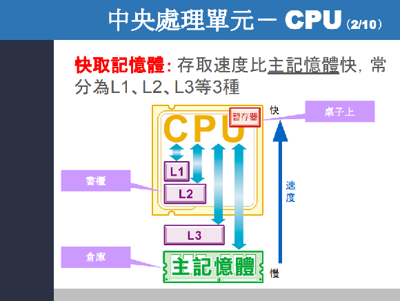
重點
暫存器最快、L3 是共用的。
CPU 指令過程
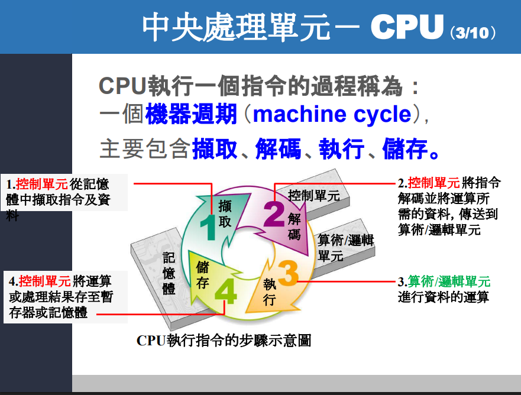
這張圖在回答的核心問題是：
CPU 執行一條指令時，到底會經過哪些步驟？
答案就是圖上寫的 機器週期（machine cycle），也常叫 指令週期（instruction cycle）。這個簡化版通常拆成四步：
- 擷取（Fetch）
- 解碼（Decode）
- 執行（Execute）
- 儲存（Store）
先把這張圖翻成人話
你可以把 CPU 想成餐廳廚房：
- 記憶體：食材庫
- 控制單元（CU, Control Unit）：店長/指揮
- 算術/邏輯單元（ALU, Arithmetic Logic Unit）：真正下鍋炒菜的人
- 暫存器（Registers）：料理台上手邊的小盒子
那執行一條指令，就像做一道菜：
- 先去庫房拿菜單和食材
- 看懂菜單
- 開始料理
- 把結果放回盤子或櫃子
這就是圖上的四步。
1. 擷取（Fetch）
圖上第 1 步在講：
控制單元從記憶體中擷取指令及資料
更精確地說，擷取階段最核心的是：
- PC（Program Counter，程式計數器） 裡先有「下一條指令的位址」
- CPU 依照這個位址去記憶體抓指令
- 抓回來後放進 IR（Instruction Register，指令暫存器）
你前面一直在問的那件事，這裡就接上了：
- PC：記「下一條指令在哪」
- IR：記「目前抓到的這條指令是什麼」
如果用你熟悉的偽程式碼寫，很像：
AR = PC; // 本次先去抓指令
IR = InstrMem[AR];
PC = PC + 4; // 指向下一條
2. 解碼（Decode）
圖上第 2 步寫的是：
控制單元將指令解碼並將運算所需的資料，傳送到算術/邏輯單元
意思是：
CPU 拿到指令之後，不能只看到一串內容，還要知道它到底要幹嘛。
例如這條指令：
ADD R1, R2
解碼後 CPU 才知道：
- 這是 ADD（加法）
- 要拿 R1 和 R2
- 接下來要交給 ALU 去算
所以 解碼（decode） 的本質就是：
把「指令內容」翻譯成 CPU 內部各部件該做的動作。
也就是把
「ADD R1, R2」
變成
「這是 ADD
要讀 R1
要讀 R2
要叫 ALU 做加法
結果要寫回哪裡」
3. 執行（Execute）
圖上第 3 步寫的是：
算術/邏輯單元進行資料的運算
這一步就是 ALU 真正出手的時候。
例如：
5 + 7
如果前面已經把 5 和 7 準備好，ALU 在這一步就真的把結果算出來。
不只加法，像：
- 減法
- 比較大小
- AND / OR / XOR
- 位移
- 某些條件判斷
很多也都屬於這一步。
你可以把這一步理解成：
前兩步是在準備，這一步才是真正動手做。
4. 儲存（Store）
圖上第 4 步寫的是：
控制單元將運算或處理結果存至暫存器或記憶體
這一步就是把剛剛算好的結果放好。
例如：
- 先放回 ACC（累加器）
- 或放進某個 GPR（一般用途暫存器）
- 如果需要，也可能再寫回主記憶體
所以整個流程就變成：
抓指令 → 看懂指令 → 做運算 → 放好結果
用一個完整例子串一次
假設記憶體裡有：
M[100] = 7
M[104] = 5
程式要做的是：
把 M[100] 和 M[104] 相加，結果存到 M[108]
那機器週期就可以想成：
擷取
- 從記憶體抓到這條指令
- 放進 IR
解碼
- 控制單元看懂這條指令要做加法
- 並且知道要去拿位址 100 和 104 的資料
執行
- ALU 把
7 + 5算成12
儲存
- 把
12先放到暫存器，或直接寫回M[108]
這張圖和你前面問的各種暫存器怎麼接起來？
這是這張圖最重要的地方。
在「擷取」時常用到
- PC：下一條指令位址
- AR / MAR：本次要去存取的記憶體位址
- IR：抓到的目前指令
在「解碼」時常用到
- IR：讓控制單元知道這條指令是什麼
- GPR / ACC：如果要準備運算資料，可能會先放進這些暫存器
在「執行」時常用到
- ALU
- ACC
- GPR
- FR（Flag Register，旗標暫存器）：記錄結果狀態，例如是不是 0、是否進位。條件跳躍也常看 flag register。
在「儲存」時常用到
- ACC / GPR
- 或再寫回主記憶體
你前面最容易混的點，這張圖其實都能解掉
1. 為什麼 PC 和 IR 要分開？
因為在機器週期裡：
- PC 一直在管「下一條」
- IR 一直在管「這一條」
如果不分開，CPU 很難同時知道「現在正在做什麼」和「下一步去哪裡」。
2. 為什麼 AR / MAR 會重複用？
因為在這四步裡，CPU 可能先要去抓指令，再去抓資料。
所以同一個 AR / MAR 會先後裝不同位址：
- 抓指令時放指令位址
- 抓資料時放資料位址
所以它不是在記「永久位置」，而是在記：
這一次記憶體存取要去哪裡。
3. 為什麼需要 FR？
因為執行完之後，不只要知道「結果是多少」，還要知道：
- 是不是 0
- 有沒有進位
- 是不是負數
後面如果有 branch / jump，就可能直接看 flag register 來決定要不要跳。
這張圖其實是「簡化版」
這裡我也要幫你補一個很重要的觀念：
這張圖是教學簡化版，不是現代 CPU 實體內部真的只有這 4 步、而且完全照順序慢慢做。
現代 CPU 常常會：
- pipeline（流水線）
- 多個步驟重疊進行
- 一邊 fetch 新指令，一邊 decode 舊指令，一邊 execute 更前面的指令
所以這張圖比較像是在教你：
「一條指令在邏輯上會經過哪些階段」
而不是說 CPU 現實中永遠只會一次做一個圈圈。
你可以怎麼背這張圖？
我建議你直接背這句：
Fetch 抓進來，Decode 看懂它，Execute 做出來，Store 放回去。
或中文更口語一點：
拿指令 → 看指令 → 做事情 → 放結果
跟整堂課的關係
這張圖其實就是你整門課後面很多主題的起點：
- 講 PC / IR / AR：是在拆 Fetch
- 講 控制單元：是在拆 Decode
- 講 ALU / ACC / GPR / FR：是在拆 Execute
- 講 記憶體 / 暫存器 / 快取：是在拆 Store 和資料移動
- 講 pipeline：是在說這四步怎麼重疊加速
所以這張圖不是單純背四個名詞而已，而是在告訴你：
CPU 執行一條指令時，內部其實是有流程的。
如果你要，我下一步可以直接把這張圖改寫成你最熟的形式：
用 PC / IR / AR / ACC / R1 / FR 寫成一段一步一步的偽程式碼流程。
為何指令不直接給解碼後的東西，要給一個指令後再解碼
既然 CPU 最後真正要用的是「解碼後的控制資訊 / 微操作」，那為什麼不在記憶體裡直接存那些解碼後的東西？為什麼還要先存一條指令，再進 CPU 內部解碼一次？
答案是：
因為「原始指令編碼」比較小、比較標準、比較容易儲存與傳輸；而「解碼後的東西」通常比較大、比較依賴 CPU 內部設計，而且不同 CPU 內部格式可能不一樣。 所以主記憶體 / 執行檔通常存的是 ISA 層級的 machine code（機器指令編碼），不是 CPU 內部的 decoded form（解碼後形式）。現代 CPU 為了省時間，會在晶片內部另外做 uop cache / decoded i-cache，把「已解碼結果」暫存起來，下次重用。Intel 的文件明確提到，core 既可以從 decoded instruction cache 取 uOps，也可以從記憶體取原始 instructions 再 decode。
先講最核心的 3 個原因
1. 原始指令比較省空間
機器指令的 encoding（編碼）本來就是為了用較少 bit 表達一個操作。 如果你直接把「解碼後的控制訊號 / 微操作」存進記憶體，通常會更大。這也是為什麼很多架構很重視 code density（程式碼密度）；compressed instruction set 的目的之一，就是用更緊湊的格式減少記憶體占用。
你可以把它想成：
- 原始指令：像 zip 壓縮檔
- 解碼後內容：像解壓後的工作資料
如果你硬要把所有程式都存成「解壓後版本」，主記憶體、快取、執行檔都會變大很多。
2. 解碼後的格式不是 ISA 標準，而是 CPU 內部格式
程式對外遵守的是 ISA（Instruction Set Architecture，指令集架構），例如 x86、ARM、MIPS。 但 CPU 內部怎麼把這條指令拆成控制訊號、甚至拆成幾個 micro-ops（微操作），那是 微架構（microarchitecture） 自己的事，不同 CPU 可以完全不同。Intel 明確說過，x86 指令會被 decode 成 μops，而且有些是一對一，有些會變成一串 μops。
這代表：
同一條 ISA 指令，在不同 CPU 裡的「解碼後長相」可能不同。
所以你不能把某顆 CPU 內部的 decoded form，當成全世界通用的程式儲存格式。
3. CPU 其實已經在做你說的事了，只是不是存在主記憶體
你問的想法其實很合理，而且現代 CPU 真的有做：
- Decoded ICache / Decoded Stream Buffer（DSB）
- uop cache
- 早期 Intel Pentium 4 的 trace cache
Intel 的文件直接說：DSB cache stores uOps that have already been decoded，可避免再走 legacy decode pipeline。Pentium 4 的 trace cache 也是存 decoded micro-ops，下次就不用重新 decode。
也就是說：
CPU 不是沒想到「直接存解碼後的東西」；而是把它放在晶片內部快取，而不是拿來取代主記憶體裡的原始指令格式。
為什麼不能乾脆「程式檔裡就直接存解碼後的東西」？
因為這會有 4 個大問題。
A. 不可攜
同一份程式如果直接存某顆 CPU 的 decoded uops，那它很可能只能在那顆或那一代 CPU 跑。 但 machine code 的好處是：只要同 ISA，就有機會相容。這正是 ISA 和微架構分層的價值。
B. 浪費空間
decoded form 往往比 instruction bytes 更肥。Intel 的 trace cache / decoded i-cache 是存在晶片裡、針對熱區重用，不是全面替代 instruction cache，這也反映出 decoded form 並不適合拿來當唯一儲存格式。
C. 失去彈性
不同 CPU 的執行資源不同：
- ALU 數量不同
- μop 切法不同
- 是否 microcode assist 不同
所以 decode 不只是「翻譯」，而是會把 ISA 指令映射到這顆 CPU 的內部執行模型。這種映射不適合提前固化成外部檔案格式。
D. 安全 / 模式 / 狀態會影響解碼結果
某些模式、權限、prefix、控制位元改變時，decode 行為可能不同。Intel 也提到 decoded i-cache 會因為控制狀態改變而 flush 或 disable。
用生活例子講最直白
你可以把它想成：
- 原始指令：一張簡短菜單
- 解碼後內容：廚房內部的工作排程表
為什麼餐廳不直接把所有菜單都印成廚房排程表？
因為：
- 排程表比較長、佔空間
- 不同廚房排法不同
- 客人不需要知道廚房內部排程
- 熱門菜可以先在廚房內部做成快捷流程，下次直接用
這就很像：
- 外部存 machine code
- CPU 內部快取 decoded uops
所以 decode 真正的角色是什麼？
decode 其實是：
把「對外標準格式」轉成「本 CPU 內部可執行格式」
這樣做的好處是：
- 外部格式統一
- 內部實作自由
- 可以針對熱區在 CPU 內部快取已解碼結果
這就是為什麼 instruction stream 和 decoded stream 通常分開存在。
那你的想法在哪些地方其實是對的？
你想說：
既然 decode 很花工，為什麼不直接存 decode 後？
這個方向是 ✅ 對的，而且現代 CPU 確實用 uop cache / trace cache 來做。 只是正確的版本不是：
「主記憶體直接存解碼後格式」
而是：
「主記憶體存標準 machine code；CPU 內部對熱指令快取解碼後結果」。
一句話收斂
不直接把程式存成解碼後格式，是因為原始指令更小、更通用、與 CPU 內部實作解耦；而現代 CPU 為了省去重複解碼，會在晶片內部另外快取已解碼的 uops。
⭐ 我下一步最適合幫你做的是：畫一張 「主記憶體存 instruction bytes」vs「CPU 內部存 decoded uops」 的對照圖，這題你就會完全通。
機器週期
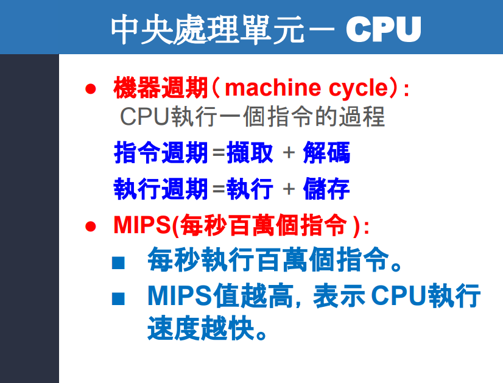
解釋
這張圖在回答什麼？
這張投影片在講兩件事：
第一，CPU(Central Processing Unit，中央處理單元) 執行「一個指令」時，大致會經過哪些步驟。投影片把這整個過程叫做 machine cycle(機器週期)，並拆成：
- 指令週期 = 擷取(fetch) + 解碼(decode)
- 執行週期 = 執行(execute) + 儲存(store)
這和課堂教材前面那張「CPU執行指令的步驟示意圖」一致，都是在用入門版本說明 CPU 如何完成一條指令。
第二，投影片想介紹 MIPS(Million Instructions Per Second，每秒百萬個指令) 這個「很初階的速度指標」：意思是 CPU 一秒大約能執行多少百萬條指令。
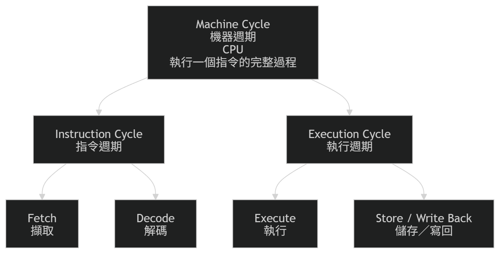
machine cycle(機器週期) 到底是什麼？
你可以把它想成：**CPU 完整處理一條指令的流程**。這個概念和常見的 **fetch-decode-execute cycle(擷取－解碼－執行循環)** 是同一路的說法。Britannica 也把 CPU 的基本運作描述為這種循環，而且現代 CPU 還會用 pipeline(管線化) 讓多條指令在不同階段重疊進行。([Encyclopedia Britannica](https://www.britannica.com/technology/computer?utm_source=chatgpt.com))
用生活化例子來看最容易懂：
假設指令是： 「把記憶體裡的某個數字加 1」
那 CPU 大概會這樣做：
-
擷取(fetch) 先把下一條要做的指令拿進來。
-
解碼(decode) 看懂這條指令到底要做什麼。 例如辨認出：「喔，這是一條加法指令，而且要去某個位址拿資料。」
-
執行(execute) 真的去做運算。 例如把資料送進 ALU(Arithmetic Logic Unit，算術邏輯單元) 做加 1。
-
儲存(store / write back) 把結果放回某處。 可能放回 register(暫存器)，也可能寫回 memory(記憶體)。
為什麼投影片把它拆成「指令週期」和「執行週期」？
這是教學上常見的簡化拆法。
因為前兩步：
- 擷取(fetch)
- 解碼(decode)
比較像是在「理解命令」。
後兩步：
- 執行(execute)
- 儲存(store)
比較像是在「真的做事並把結果收好」。
所以老師才會寫成：
- 指令週期(instruction cycle) = 擷取 + 解碼
- 執行週期(execution cycle) = 執行 + 儲存。
你可以把它想成外送流程：
- 擷取：收到訂單
- 解碼：看懂客人要什麼
- 執行：開始做餐
- 儲存：把餐裝好、交出去
這裡有一個你要特別注意的地方
投影片這樣講對入門很有幫助，但不是所有指令都一定會「存回主記憶體」。
有些指令執行完，只是把結果留在：
- register(暫存器)
- flag register(旗標暫存器)
- program counter(程式計數器，PC)
例如：
- 比較(compare) 指令可能只更新旗標。
- 跳躍(jump/branch) 指令可能只改 PC。
- 算術指令常常只是把結果寫回某個暫存器。
所以這張圖中的「儲存」比較適合理解成 write back(寫回結果)，不一定每次都是寫到主記憶體。這是我們在後面學單週期(single-cycle)、多週期(multi-cycle)、管線(pipeline)時會慢慢看得更精細的地方。這張投影片屬於入門簡化版。
MIPS 是什麼？
MIPS = Million Instructions Per Second，就是：
每秒執行多少「百萬條指令」。
所以：
- 1 MIPS = 每秒 100 萬條指令
- 5 MIPS = 每秒 500 萬條指令。
投影片寫「MIPS 值越高，表示 CPU 執行速度越快」，這句話在入門直覺上可以先這樣記。
但嚴格來說，MIPS 不能直接代表「誰比較快」
這裡我要明確幫你修正一下： 「MIPS 高 = CPU 一定比較強」這句話不夠精確。
原因有幾個：
-
不同指令花的時間可能不同。 有些指令很簡單，有些很複雜，所以「一條指令」不一定等價。(維基百科)
-
MIPS 和 clock frequency(時脈頻率) 不是同一件事。 一條指令可能需要很多個 clock cycles(時脈週期)，也可能一個週期內同時推進多個獨立操作。(維基百科)
-
快取(cache)、分支(branch)、記憶體階層(memory hierarchy) 都會影響真實效能。 所以實際程式跑起來，不會只看「每秒幾條指令」。(維基百科)
-
不同架構之間更難直接比。 尤其 RISC(Reduced Instruction Set Computer，精簡指令集) 和 CISC(Complex Instruction Set Computer，複雜指令集) 的指令複雜度不同，用 MIPS 直比容易失真。(維基百科)
工程社群也常提醒這點。像 Stack Overflow 上就直接指出：**MIPS 是 CPU 速度的度量，不是演算法本身效率的度量**。([Stack Overflow](https://stackoverflow.com/questions/678771/how-to-calculate-mips-for-an-algorithm-for-arm-processor))
所以更精確的說法應該是：
**MIPS 可以當作很粗略的入門指標，但不能單獨拿來判斷不同 CPU 的真實效能。** ([維基百科](https://en.wikipedia.org/wiki/Instructions_per_second))
你可以怎麼記這一張？
我建議你記這個最核心版本：
一條指令的生命週期：
- Fetch(擷取)：把指令拿進來
- Decode(解碼)：看懂要做什麼
- Execute(執行)：真的運算或控制
- Store / Write back(儲存／寫回)：把結果放回去
而 MIPS 就先記成：
「每秒幾百萬條指令」的初階速度概念。 但考試前期可以這樣背，實務上不能只看它。
這張圖和整門課的關係
這張其實是在幫你建立後面整門課最重要的主線：
-
現在先知道 CPU 執行指令有幾個階段
-
之後會學每個階段用了哪些元件 例如 PC(程式計數器)、IR(指令暫存器)、AR(Address Register，位址暫存器)、ALU
-
再往後會學：
-
single-cycle CPU(單週期處理器)
- multi-cycle CPU(多週期處理器)
- pipeline(管線化)
- cache(快取)
- performance(效能)
所以這張不是在講細節，而是在建立「CPU 不是瞬間完成指令，而是分階段完成」這個大觀念。
一句話總結
這張圖的核心就是：
CPU 執行一條指令，通常可先想成 擷取 → 解碼 → 執行 → 儲存；而 MIPS 只是粗略描述每秒能做多少條指令的入門指標，不是完整效能答案。
四核心
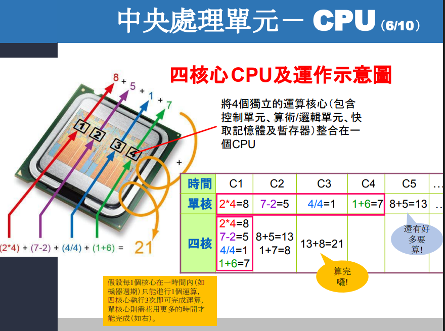
多核心比較快
CPU 規格
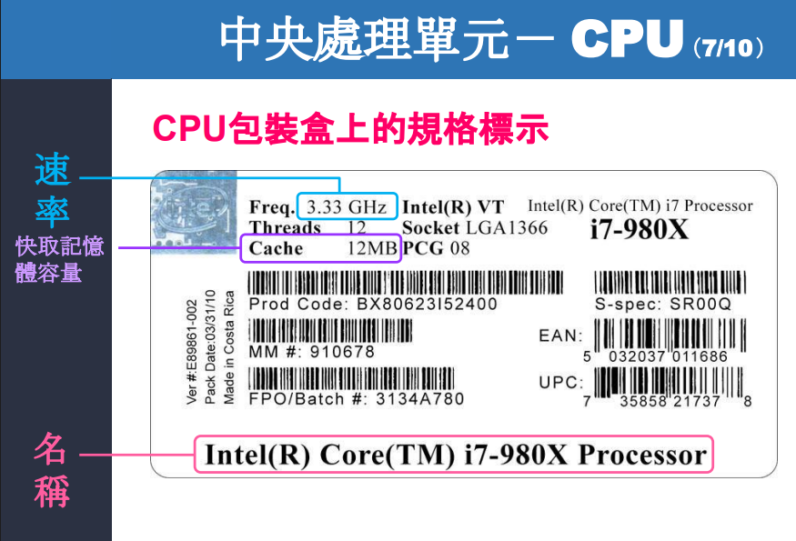
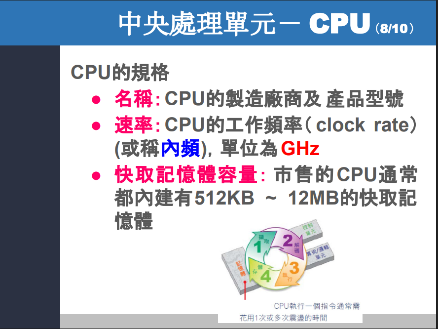
講解
先看這張圖在回答什麼
這張投影片是在教你：**買 CPU 時，包裝上最常先看到的 3 個規格**，就是 **名稱、速率、快取記憶體容量**。你圖上的這顆範例是 **Intel Core i7-980X Processor**，標示 **3.33 GHz** 與 **12MB Cache**；投影片也正是用這三項來介紹 CPU 規格。 ([Intel CDRD](https://cdrdv2-public.intel.com/841556/APP-for-Intel-Core-Processors.pdf))
1. 名稱 Name(名稱)
像圖上的 Intel Core i7-980X Processor，這個名稱主要是在告訴你兩件事：
第一，它是哪一家做的。這裡是 Intel。 第二，它是哪個系列、哪個型號。這裡是 Core i7-980X。
你可以把它想成汽車的「品牌 + 車型」：
- Intel / AMD / Apple：像品牌
- Core i7 / Ryzen 7：像產品系列
- 980X / 9700X：像具體型號
但要注意一個很重要的觀念：**型號名稱不是直接等於效能名次**。尤其跨不同世代、不同架構時，不能只看數字大小就說誰一定比較快。Intel 也明講，**processor numbers(處理器型號編號)** 主要是用來區分同家族產品特性，不是拿來當跨家族、跨世代的直接效能尺。([英特爾](https://www.intel.com/content/dam/www/public/us/en/documents/specification-updates/core-i7-900-ee-and-desktop-processor-series-spec-update.pdf?utm_source=chatgpt.com))
所以，名稱最主要的功能是辨識身分，不是單獨用來判斷強弱。
2. 速率 Clock rate(工作頻率／時脈)(內頻 core frequency)(工作頻率 clock frequency)
圖上的 **3.33 GHz**，意思是這顆 CPU 每秒大約有 **33.3 億個 cycles(時脈週期)**。Intel 的說法也是：**clock speed(時脈速度)** 是 CPU 每秒執行多少個 cycle，單位用 **GHz**。([英特爾](https://www.intel.com/content/www/us/en/gaming/resources/cpu-clock-speed.html))
你可以把它想成：
- CPU 像工人
- 時脈像節拍器
- 節拍越快，工人越常有機會往前做一步
所以一般來說：
- GHz 越高，代表 CPU 的工作節奏通常越快
- 但 不是只看 GHz 就能決定效能
這裡最容易搞混的一點是：
**3.33 GHz 不是「每秒做 33.3 億條指令」**。 它代表的是 **33.3 億個 cycles(週期)**。而一條指令可能需要 1 個 cycle，也可能需要很多個 cycle；Intel 的效能指標裡也會用 **CPI, Cycles Per Instruction(每指令所需週期數)** 來看這件事。([英特爾](https://www.intel.com/content/www/us/en/docs/vtune-profiler/user-guide/2023-0/cpu-metrics-reference.html?utm_source=chatgpt.com))
所以我們可以把它記成一句話：
速率 = 做事節奏，不等於最終成績。
因為最終成績還會受到架構、核心數、快取、功耗限制、散熱等因素影響。Intel 也說 clock speed 是重要規格之一，但不是唯一因素。([英特爾](https://www.intel.com/content/www/us/en/gaming/resources/cpu-clock-speed.html?utm_source=chatgpt.com))
3. 快取記憶體容量 Cache size(快取記憶體容量)
圖上的 **12MB Cache**，意思是這顆 CPU 內部有 **12MB 的快取記憶體(cache)** 可用來放常用資料。Intel 將這類共享的最後一級快取稱為 **Intel Smart Cache / Last Level Cache(最後一級快取，常可視為 L3)**。([Intel](https://edc.intel.com/content/www/us/en/design/ipla/software-development-platforms/client/platforms/alder-lake-desktop/12th-generation-intel-core-processors-datasheet-volume-1-of-2/009/intel-smart-cache-technology/))
你可以把它想成：
- RAM(主記憶體) 像書櫃
- Cache(快取) 像桌面
- Register(暫存器) 像手上正拿著的紙
如果你常常要用同一份資料，放桌上就比一直跑去書櫃拿快很多。 所以快取的作用就是：
- 把 常用資料／指令 先放在離 CPU 很近的地方
- 讓 CPU 少等主記憶體
- 減少資料搬運延遲
Intel 的產品資料指出，較大的共享快取能讓系統在較大資料集上工作更快；AMD 也指出，更大的 L3 cache(三級快取) 能提高 **cache hit ratio(快取命中率)**、減少資料掉回主記憶體，進而提升某些技術運算工作負載的效能。([Intel CDRD](https://cdrdv2-public.intel.com/787136/Intel%20Core%20Desktop%2014th%20gen%20Product%20Brief%20full%20stack%205.0.pdf))
不過這裡也要修正一個常見誤解：
不是快取越大就對所有程式都一樣有感。
社群上很常見的經驗是： 較大的 L3 cache 在 **遊戲、影像編輯、3D rendering(算圖)** 這類常重複存取資料的工作上，常會比較有感；但如果你的工作本來就不太吃 cache，差異可能沒有想像中大。這種說法和官方文件的方向是一致的，但社群經驗仍應視工作負載而定。([Reddit](https://www.reddit.com/r/Amd/comments/13j96ey/difference_between_low_l3_cache_and_high_l3_cache/))
你可以怎麼記這三個規格
最簡單的記法是：
- 名稱：它是誰
- 速率：它做事的節奏多快
- 快取容量：它手邊能先放多少常用資料
如果用生活化比喻：
- 名稱 = 這位員工的職稱與身分
- 速率 = 這位員工手腳快不快
- 快取 = 這位員工桌上能攤開多少常用資料
補一個現在比較新的觀念
你投影片上寫「市售 CPU 通常內建 512KB～12MB 快取」，這個範圍對早期教材範例是合理的，但以現在的 CPU 來看，這個範圍已經偏舊。例如：
- Intel Core Ultra 9 285K 官方規格列出 36M Cache
- AMD Ryzen 7 9800X3D 官方規格列出 96MB L3 Cache (英特爾)
所以你上課時可以把它理解成：
這張投影片是在講「規格種類」沒錯，但裡面的「數值範圍」是舊教材時代的常見值。
一句話總結
這三個規格裡：
- 名稱 讓我們知道 CPU 的身分與定位
- 速率 讓我們知道 CPU 的工作節奏
- 快取記憶體容量 讓我們知道 CPU 能把多少常用資料留在身邊，減少等待
但真正在比較效能時，不能只看其中一項，而是要一起看。
快取記憶體容量 Cache size 是指 L1還是L2還是L3，為何
結論先講
在你這張投影片的語境裡，**快取記憶體容量 Cache size 幾乎就是指 L3 cache(三級快取)／LLC, Last Level Cache(最後一級快取)**，**不是 L1，也通常不是 L2**。原因是像 Intel 這種標示方式，寫成單一的「12M Cache」「36 MB Cache」時，通常是在講 **Intel Smart Cache**；而 Intel 官方明確說 **Intel Smart Cache 是 shared Last Level Cache(共享的最後一級快取)**，也就是一般常講的 **L3 cache**。([Intel](https://edc.intel.com/content/www/us/en/design/ipla/software-development-platforms/client/platforms/alder-lake-desktop/12th-generation-intel-core-processors-datasheet-volume-1-of-2/009/intel-smart-cache-technology/))
為什麼這張圖比較像是在講 L3？
因為你圖上的範例是 **i7-980X，標示 12MB Cache**。這種 Intel 的寫法，現在官方規格頁也還看得到同樣模式：例如 **i9-14900K** 會把 **Cache** 跟 **Total L2 Cache** 分開列，其中 **Cache = 36 MB Intel Smart Cache**，而 Intel 又定義 **Smart Cache = LLC = 可視為 L3**。所以這種包裝上直接寫一個大大的 **Cache xx MB**，通常是在指 **L3/LLC**，不是把 L1、L2、L3 全混在一起。([英特爾](https://www.intel.com/content/www/us/en/products/sku/236773/intel-core-i9-processor-14900k-36m-cache-up-to-6-00-ghz/specifications.html))
為什麼不是 L1？
因為 **L1 cache(一級快取)** 通常非常小，而且是**每個核心自己有一份**，不是一個很適合直接印在包裝上給一般消費者看的單一數字。Intel 官方文件就寫得很清楚：**1st level cache 與 2nd level cache 對 P-core 是各核心各自獨立**；而 **LLC/Smart Cache 是共享的**。共享的一大塊快取，比較容易用一個整體數字來當規格標示。([Intel](https://edc.intel.com/content/www/us/en/design/ipla/software-development-platforms/client/platforms/alder-lake-desktop/12th-generation-intel-core-processors-datasheet-volume-1-of-2/009/intel-smart-cache-technology/))
你可以把它想成：
- L1：每個工人手上的小便條紙，超快，但很小
- L2：每個工人桌邊的小抽屜，也很快，但還是不大
- L3：整個小組共用的大桌面，雖然比 L1/L2 慢一些，但容量大很多，最適合拿來印成「本 CPU 有幾 MB 快取」這種規格
為什麼通常也不是 L2？
因為 L2 cache(二級快取) 也常常帶有「每核心」或「每叢集」的屬性，不像 L3 那麼適合用一個簡單的大數字代表整顆 CPU。Intel 的資料就直接區分成：
- Cache = Intel Smart Cache = L3/LLC
- Total L2 Cache = 另外列出 (英特爾)
這代表在 Intel 的規格語言裡，當它單獨寫 Cache 時，通常不是在指 L2。
但有沒有例外？有。
這裡要很小心，不同廠商的 marketing term(行銷用語) 不完全一樣。
AMD 很常寫的是 Total Cache(總快取)，而且官方文件會直接註明 Total Cache = L2 + L3。例如 AMD Ryzen 7 9800X3D 的官方規格頁會分開列：
- L1 Cache = 640 KB
- L2 Cache = 8 MB
- L3 Cache = 96 MB (AMD)
而 AMD 的銷售文件又會把它寫成 **104 MB Total Cache = L2 + L3**。([AMD](https://www.amd.com/content/dam/amd/en/documents/partner-hub/ryzen/amd-ryzen-7-9800x3d-how-to-sell-guide-competitive.pdf?utm_source=chatgpt.com))
所以我們要記一個更精準的規則：
flowchart TB
A[看到 Cache size] --> B{廠商怎麼寫?}
B \--\> C\[Intel 寫 Cache / Smart Cache\<br\>通常指 L3 / LLC\]
B \--\> D\[AMD 寫 Total Cache\<br\>通常指 L2 \+ L3\]
B \--\> E\[詳細規格頁\<br\>才會分開列 L1 / L2 / L3\]
回到你這張投影片，最該怎麼回答？
你在這堂課、這張圖裡，最安全的回答是：
這裡的 Cache size 指的是 CPU 對外標示的主要快取容量；以這顆 Intel i7-980X 的標示方式來看，實際上就是 L3 cache(三級快取)。
為何教材會這樣講，而不細分 L1/L2/L3？
因為這張投影片是在介紹消費者看包裝盒時最常見的規格，不是在講 CPU 內部微架構。 對初學者來說，先教：
- 名稱
- 速率
- 快取容量
會比較容易上手；而 L1/L2/L3 的分工 通常會在更後面的 cache hierarchy(快取階層)、memory hierarchy(記憶體階層) 才細講。這其實是教學上的簡化，不是說 CPU 只有一種快取。
社群上也常有人用很接近的說法理解：**L3 通常比 L1/L2 大很多、比 RAM 快很多，而且常是多核心共享，所以最常變成規格表上那個醒目的 cache 數字**。不過這只是經驗層面的說法，真正準確還是要看官方規格欄位名稱。([Reddit](https://www.reddit.com/r/buildapc/comments/150j89/l3_cache_importance/))
你考試可以怎麼寫
如果老師是照這張投影片教，你可以寫：
**快取記憶體容量(Cache size) 是 CPU 內建快取的容量；在一般 Intel 規格標示中，常指 L3 cache(三級快取/最後一級快取)。它用來暫存常用資料與指令，減少 CPU 存取主記憶體(RAM) 的等待時間。** ([Intel](https://edc.intel.com/content/www/us/en/design/ipla/software-development-platforms/client/platforms/alder-lake-desktop/12th-generation-intel-core-processors-datasheet-volume-1-of-2/009/intel-smart-cache-technology/))
一句話記憶版
- L1 / L2：比較像核心自己在用的小快取
- L3：比較像整顆 CPU 對外宣傳時寫的那個大快取數字
- 但 AMD 的 Total Cache 可能是 L2 + L3，不一定只算 L3 (Intel)
下一步如果你要，我可以直接幫你把 L1、L2、L3 的差別 畫成一張超好背的表格。
CPU clock(時脈)
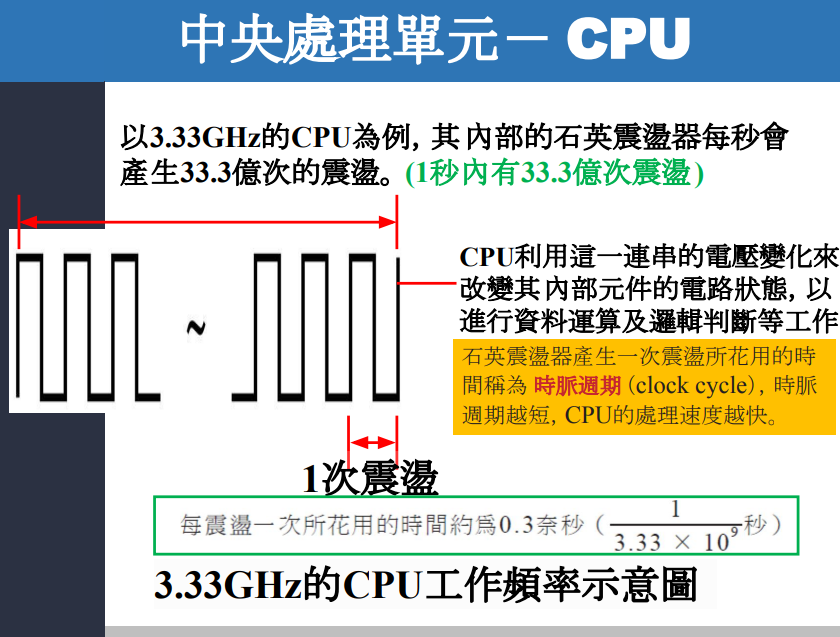
講解
這張圖在講什麼
它是在說：**3.33 GHz 的 CPU，代表它的 clock(時脈) 每秒大約有 33.3 億個 cycles(週期)**。Intel 的官方說法也是，像 3.2 GHz 就表示每秒約 32 億個 cycles，所以 3.33 GHz 就是每秒約 33.3 億個 cycles。([英特爾](https://www.intel.com/content/www/us/en/gaming/resources/cpu-clock-speed.html?utm_source=chatgpt.com))
圖上的波形要怎麼看
左邊黑色一格一格的波形，可以把它想成 CPU 的**節拍器**。 電壓會規律地高、低、高、低變化，形成 clock signal(時脈訊號)。圖上紅色短箭頭標的 **1 次震盪**，就是 1 個 **clock cycle(時脈週期)**；而 **clock cycle** 本來就是 CPU 的基本時間單位。([Lenovo](https://www.lenovo.com/hk/en/glossary/clock-cycle/?srsltid=AfmBOoopeH1cxfC5JuxrQ4RjfS0mIIFkQ_fLyBdGAAxFdQZ60J-KRs5x&utm_source=chatgpt.com))
為什麼會算出 0.3 奈秒
因為 3.33 GHz = 3.33 × 10^9 次／秒， 所以每 1 次週期花的時間就是：
1 ÷ (3.33 × 10^9) 秒 ≈ 0.3 ns(奈秒)
也就是說，這顆 CPU 的節拍非常快，**大約 0.3 奈秒就跳一次拍子**。clock cycle 通常就是奈秒等級的時間。([英特爾](https://www.intel.com/content/www/us/en/gaming/resources/cpu-clock-speed.html?utm_source=chatgpt.com))
CPU 為什麼需要這個節拍
CPU 不是亂做事，而是跟著這個 clock 一拍一拍地推進。 每來一個 cycle，CPU 內部很多電晶體(transistor) 會配合這個節奏改變狀態，去做資料搬移、運算、判斷等工作。投影片右邊那句話「用電壓變化改變內部元件狀態」講的就是這件事。([英特爾](https://www.intel.com/content/www/us/en/gaming/resources/cpu-clock-speed.html?utm_source=chatgpt.com))
你可以直接這樣記
**GHz = CPU 的節拍有多快** **clock cycle = 一次節拍的時間** **3.33 GHz = 每秒 33.3 億拍 = 每拍約 0.3 ns**。([英特爾](https://www.intel.com/content/www/us/en/gaming/resources/cpu-clock-speed.html?utm_source=chatgpt.com))
再補一個很重要的小修正： **不是每 1 個 cycle 就一定做完 1 條 instruction(指令)**。有些指令可能要好多個 cycles，投影片這裡是在講「時脈節奏」，不是在說「每拍做完一條指令」。這是初學者最容易混淆的地方。([英特爾](https://www.intel.com/content/www/us/en/gaming/resources/cpu-clock-speed.html?utm_source=chatgpt.com))
如果你要，我可以下一步用 「老師上課會怎麼講」版本，幫你把這張圖縮成 3 句超好背的考試答案。
內頻與外頻
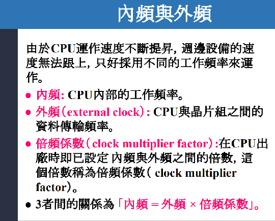
解釋
這張圖在講什麼
簡單講，這張圖是在說 CPU 的速度可以先用這個公式理解：
內頻 = 外頻 × 倍頻係數
也就是：
- 內頻：CPU 核心自己真正跑的速度
- 外頻 / BCLK：提供給 CPU 與部分平台邏輯參考的基準拍子
- 倍頻：把這個基準拍子放大成 CPU 的核心頻率
Intel 官方在講現在的處理器時，也用幾乎一樣的概念：**CPU Core Frequency(核心頻率) = BCLK(Base Clock，基礎時脈) × Multiplier(倍頻)**。例如 100 MHz × 44 = 4.4 GHz。([Intel](https://www.intel.com/content/www/us/en/gaming/resources/how-to-overclock.html?utm_source=chatgpt.com))
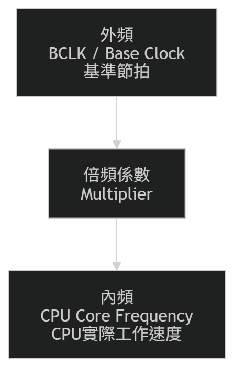
用生活化方式理解
你可以把它想成騎腳踏車：
- 外頻：你踩踏板的節奏
- 倍頻係數：齒輪比
- 內頻：最後輪子轉多快
所以不是外面節拍本身很高，而是 CPU 會把這個節拍「乘上倍數」，變成自己的核心工作頻率。這就是為什麼明明基準時脈常常只有 100 MHz 左右，但 CPU 最後可以跑到幾 GHz。([Intel](https://www.intel.com/content/www/us/en/gaming/resources/how-to-overclock.html?utm_source=chatgpt.com))
公式怎麼看
例如：
- 外頻 = 100 MHz
- 倍頻係數 = 33
那麼：
- 內頻 = 100 MHz × 33 = 3300 MHz = 3.3 GHz
所以你前面看到的 **3.33 GHz CPU**，可以把它理解成： 有一個較低的基準時脈，CPU 再透過倍頻把它放大成核心真正運作的速度。([Intel](https://www.intel.com/content/www/us/en/gaming/resources/how-to-overclock.html?utm_source=chatgpt.com))
這張投影片裡的「外頻」要注意什麼
你這張教材寫：
外頻 = CPU 與晶片組之間的資料傳輸頻率
這種說法在**舊式 PC 架構**裡很常見，因為以前常用 **FSB, Front-Side Bus(前端匯流排)** 來連接 CPU 與 chipset(晶片組)。Intel 舊資料也確實把 FSB 定義成連接 processor 與 chipset 的介面。([Intel](https://www.intel.com/content/dam/www/public/us/en/documents/datasheets/pentium-dual-core-e6000-e5000-datasheet.pdf?utm_source=chatgpt.com))
但如果用現在比較精準的講法，我們通常會說：
- 外頻比較接近 BCLK / Base Clock(基礎時脈、基準時脈)
- 不是單純把它當成「CPU 和晶片組傳資料的速度」而已
因為現代 CPU 架構已經不像早年那樣完全依賴傳統 FSB；Intel 與 AMD 後來都改成其他互連設計，所以教材這句比較像是**歷史教材的簡化版本**。([維基百科](https://en.wikipedia.org/wiki/Front-side_bus?utm_source=chatgpt.com))
你現在最該記住的版本
考試或上課先記這個就夠了：
- 內頻：CPU 內部真正工作的頻率
- 外頻：提供給 CPU 的基準時脈
- 倍頻係數：把外頻放大的倍數
- 公式：內頻 = 外頻 × 倍頻係數。(Intel)
再補一個實務觀念
社群上做超頻時，大家常說：
- 改 multiplier(倍頻)：通常比較直接，主要影響 CPU 核心頻率
- 改 BCLK(基準時脈)：可能連 RAM、其他連結時脈一起被牽動，所以更麻煩
這和 Intel 對 multiplier/BCLK 的說法方向一致，因此你也可以順便理解為什麼現在談 CPU 速度時，大家更常直接講 **BCLK × multiplier**。([Reddit](https://www.reddit.com/r/overclocking/comments/40mi32/base_clock_overclocking_vs_multiplier/?utm_source=chatgpt.com))
一句話版
外頻是基準節拍，倍頻是放大倍率，內頻是 CPU 最後真正工作的速度。
如果你要，我下一張可以接著幫你把 內頻、外頻、倍頻 畫成一張超好背的小圖。
所以他先知道外頻，然後透過倍頻知道內頻嗎
對，電路角度可以這樣理解，但要把「知道」換成更精準的說法：
CPU 先取得外頻／BCLK(Base Clock，基準時脈) 當參考時脈，再透過倍頻器與 PLL(Phase-Locked Loop，鎖相迴路) 產生內頻／core frequency(核心頻率)。
但是內頻不是石英的頻率嗎，他不是本來就要知道嗎
不是，這兩個頻率不是同一個東西
你這裡把 石英振盪器 crystal clock(石英時鐘) 和 內頻 core frequency(核心頻率) 混在一起了。
更正確地說：
- 石英的頻率：是比較底層的 固定參考時脈 reference clock
- 內頻：是 CPU 核心最後真正工作的頻率
Intel 官方文件明講：**處理器裡有 PLL(Phase-Locked Loop，鎖相迴路)，會從 fixed crystal clock(固定石英時鐘) 產生 processor reference clock；這個 reference clock 也叫 BCLK(Base Clock，基準時脈)**。也就是說，**石英先提供一個較低、穩定的基準，再由 PLL 產生 BCLK／並進一步讓核心得到更高的工作時脈**，不是「石英頻率 = 內頻」。([Intel](https://edc.intel.com/content/www/us/en/design/ipla/software-development-platforms/client/platforms/alder-lake-desktop/12th-generation-intel-core-processors-datasheet-volume-1-of-2/010/integrated-reference-clock-pll/?utm_source=chatgpt.com))
你可以這樣想
石英像是「節拍器原始音叉」， BCLK 像是「整理後可供系統使用的基準拍子」， 內頻才是「CPU 核心最後真的照著跑的拍子」。
所以流程比較像這樣：
flowchart TB
A\[石英時鐘\<br\>crystal clock\] \--\> B\[BCLK / 外頻\<br\>基準時脈\]
B \--\> C\[PLL / 倍頻\]
C \--\> D\[內頻 / core frequency\<br\>CPU核心真正工作的頻率\]
Intel 也另外說明，現代處理器的 **clock topology(時脈拓樸)** 裡，會同時有 **BCLK 100 MHz** 和 **fixed clock 38.4 MHz without SSC (crystal clock)**。這就直接表示：**固定石英時鐘** 和 **BCLK** 本身就已經不是同一個頻率，更不是直接等於幾 GHz 的核心內頻。([Intel CDRD](https://cdrdv2-public.intel.com/655258/655258-011.pdf?utm_source=chatgpt.com))
所以「CPU 本來就要知道內頻」這句，哪裡要修正？
要修正成：
CPU 本來就會接收到底層參考時脈，但核心真正工作的內頻不是直接等於石英頻率，而是由參考時脈經 PLL/倍頻機制產生。
也就是說，CPU 不是一上來就「拿到 3.3 GHz 的石英」。 實際上更像是：
- 先有一個低很多、很穩的參考來源
- 再用 PLL 放大
- 才得到幾 GHz 的核心時脈
這也是為什麼 Intel 講核心頻率時，會寫成 **CPU Core Frequency = BCLK × Multiplier**。([Intel](https://edc.intel.com/content/www/us/en/design/ipla/software-development-platforms/client/platforms/alder-lake-desktop/12th-generation-intel-core-processors-datasheet-volume-1-of-2/010/integrated-reference-clock-pll/?utm_source=chatgpt.com))
為什麼不能直接用石英當內頻？
因為石英振盪器通常提供的是**穩定、較低的參考頻率**，而 CPU 核心需要的是**更高、可調整的工作頻率**。社群工程討論裡也常用同樣的理解：外部 quartz crystal(石英晶體) 往往只有幾十 MHz，然後在晶片內用 PLL 乘上去，才變成核心要的高頻時脈。這個說法和 Intel 官方文件方向一致。([Reddit](https://www.reddit.com/r/computerscience/comments/1r380hb/how_is_computer_ghz_speed_measured/?utm_source=chatgpt.com))
你現在可以直接背這句
石英頻率不是內頻；石英提供參考時脈，CPU 再透過 PLL／倍頻產生內頻。
再壓成更短一句：
**先有石英參考時脈，再有 BCLK，最後才有 CPU 的內頻。** ([Intel](https://edc.intel.com/content/www/us/en/design/ipla/software-development-platforms/client/platforms/alder-lake-desktop/12th-generation-intel-core-processors-datasheet-volume-1-of-2/010/integrated-reference-clock-pll/?utm_source=chatgpt.com))
下一步最值得釐清的是：BCLK 和倍頻，到底是哪一個比較常被改，誰負責決定。
⭐講解一下時脈和內頻和外頻如何產生的，以及用途
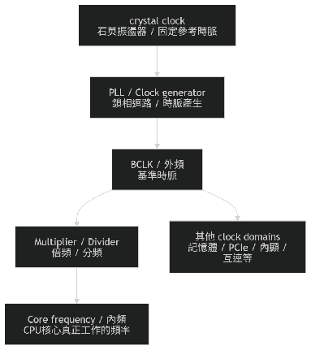
先講一句總結
時脈(clock) 是整個數位系統的節拍； 外頻(BCLK, Base Clock) 是 CPU/平台拿來當基準的時脈； 內頻(core frequency) 是 CPU 核心最後真正工作的頻率。 它們的產生流程，大致是：
flowchart TB
A\[crystal clock\<br\>石英振盪器 / 固定參考時脈\] \--\> B\[PLL / Clock generator\<br\>鎖相迴路 / 時脈產生\]
B \--\> C\[BCLK / 外頻\<br\>基準時脈\]
C \--\> D\[Multiplier / Divider\<br\>倍頻 / 分頻\]
D \--\> E\[Core frequency / 內頻\<br\>CPU核心真正工作的頻率\]
C \--\> F\[其他 clock domains\<br\>記憶體 / PCIe / 內顯 / 互連等\]
Intel 官方資料明確指出，處理器內有 **PLL(Phase-Locked Loop，鎖相迴路)**，會從 **fixed crystal clock(固定石英時鐘)** 產生 **processor reference clock**，而這個 reference clock 也叫 **BCLK(Base Clock)**；另外 Intel 也明講 **CPU Core Frequency = BCLK × Multiplier**。([Intel](https://edc.intel.com/content/www/tw/zh/design/ipla/software-development-platforms/client/platforms/alder-lake-desktop/12th-generation-intel-core-processors-datasheet-volume-1-of-2/010/integrated-reference-clock-pll/?utm_source=chatgpt.com))
1. 時脈(clock) 是怎麼產生的？
最底層通常先有 **crystal clock(石英振盪器時脈)**。 石英振盪器的工作重點是：它能提供一個**穩定、固定**的週期訊號，當作整個系統的時間參考。Intel 官方在處理器資料裡直接把它稱為 **fixed crystal clock**，並說處理器用 PLL 從它產生參考時脈。([Intel](https://edc.intel.com/content/www/tw/zh/design/ipla/software-development-platforms/client/platforms/alder-lake-desktop/12th-generation-intel-core-processors-datasheet-volume-1-of-2/010/integrated-reference-clock-pll/?utm_source=chatgpt.com))
你可以把它想成：
- 石英振盪器像最原始的節拍器
- 先提供一個穩定拍子
- 後面其他時脈再從它加工出來
用途：
- 當整個系統的底層時間基準
- 提供 PLL / clock generator 的輸入
- 讓後續時脈能穩定、可控制地被產生出來。(Intel)
2. 外頻(BCLK) 是怎麼產生的？
外頻在你這堂課裡，可以先把它理解成 **BCLK(Base Clock，基準時脈)**。 Intel 官方原文很清楚：**processor reference clock is also referred to as Base Clock or BCLK**。也就是說，BCLK 是 CPU 的**參考時脈**。而它是由前面那個 **fixed crystal clock** 經過處理器內部的 **PLL** 產生的。([Intel](https://edc.intel.com/content/www/tw/zh/design/ipla/software-development-platforms/client/platforms/alder-lake-desktop/12th-generation-intel-core-processors-datasheet-volume-1-of-2/010/integrated-reference-clock-pll/?utm_source=chatgpt.com))
所以外頻的產生流程是：
- 先有固定石英時脈
- 經過 PLL
- 得到 BCLK / 基準時脈。(Intel)
用途有兩個層面：
第一，它是 **CPU 核心頻率的基準**。 因為內頻是從它再乘上倍頻得到的。([Intel](https://www.intel.com/content/www/us/en/gaming/resources/how-to-overclock.html?utm_source=chatgpt.com))
第二，它不只影響 CPU。 Intel 官方特別指出，**BCLK 不只決定 CPU，也會影響 memory、PCIe bus、CPU cache 等**。所以外頻比較像整個平台共同參考的拍子，而不只是 CPU 自己單獨用。([Intel](https://www.intel.com/content/www/us/en/gaming/resources/cpu-clock-speed.html?utm_source=chatgpt.com))
3. 內頻(core frequency) 是怎麼產生的？
內頻就是 CPU Core Frequency(核心頻率)。 Intel 官方給的公式非常直接：
**BCLK × Multiplier = CPU Core Frequency**。([Intel](https://www.intel.com/content/www/us/en/gaming/resources/how-to-overclock.html?utm_source=chatgpt.com))
例如：
- BCLK = 100 MHz
- Multiplier = 44
- Core Frequency = 4.4 GHz。(Intel)
所以內頻不是憑空出現，也不是直接等於石英振盪器的頻率。 它是：
- 先有底層穩定時脈
- 產生 BCLK
- 再透過倍頻器 / PLL
- 形成 CPU 核心真正工作的高頻時脈。(Intel)
用途：
- 決定 CPU 核心內部 flip-flop、register、pipeline stage 是照多快的節奏在跑
- 是你平常看到 CPU 規格上幾 GHz 的主要來源
- 用來表示 CPU 核心的工作速度。(Intel)
4. 「時脈」和「內頻、外頻」的差異是什麼？
這裡最容易混，所以我直接分清楚：
時脈(clock)
是總稱。 意思是：用來同步電路動作的週期性訊號。
外頻(BCLK)
是特定的一種時脈。 它是 CPU/平台的基準時脈。
內頻(core frequency)
也是特定的一種時脈。 它是 CPU 核心實際工作的時脈。
所以關係是：
- 時脈 是大類
- 外頻、內頻 是其中兩種具體時脈。(Intel)
你可以用生活例子記：
- 時脈：節拍這個概念
- 外頻：全班一起聽的原始節拍
- 內頻：CPU 核心自己最後實際工作的節奏
5. 為什麼一顆 CPU 裡不只一種時脈？
因為現代處理器不是只有 CPU 核心。 它還有很多模組，例如：
- 核心(Core)
- 記憶體控制器(Memory Controller)
- 內顯(Graphics)
- PCIe
- 互連(Interconnect / Ring / Fabric)
這些模組的需求不同，所以常被分到不同的 **clock domains(時脈網域)**。AMD 的 SoC 文件就明確描述不同 interconnect 區塊處於不同 clock domains；Cadence 的 CDC 文件也指出，現代 SoC 通常包含 **multiple asynchronous clock domains**，而跨時脈網域時會有 **metastability(亞穩態)** 風險。([AMD 文件](https://docs.amd.com/r/en-US/ug585-zynq-7000-SoC-TRM/Interconnect-Clock-Domains?utm_source=chatgpt.com))
用途就是：
- 讓不同模組跑在適合自己的速度
- 比較容易做省電
- 比較容易做效能調整
- 避免整顆晶片所有地方都被迫跑同一個高頻。(AMD 文件)
6. 為什麼改倍頻通常比改外頻常見？
這是理論和實務連在一起的地方。
Intel 官方直接說： **BCLK 不只影響 CPU，也會影響 memory、PCIe bus、CPU cache 等**，所以調 BCLK 很容易一次牽動很多元件；相對地，調 **CPU multiplier(倍頻)** 比較直接。([Intel](https://www.intel.com/content/www/us/en/gaming/resources/cpu-clock-speed.html?utm_source=chatgpt.com))
社群經驗也很一致： Reddit 上談 BCLK overclocking(外頻超頻) 時，常提到它的風險在於 RAM、PCIe 裝置、甚至開機穩定性都可能一起受影響。([Reddit](https://www.reddit.com/r/Amd/comments/8ihyb5/bclk_overclocking_gaming_stability_and_risk/?utm_source=chatgpt.com))
所以實務上常看到：
- 改倍頻：主要改 CPU 核心速度
- 改 BCLK：可能連很多周邊一起被動到，穩定性更麻煩。(Intel)
7. 你可以怎麼把這三者串起來背
最推薦背這個版本：
時脈(clock)
是同步電路動作的節拍。 **用途**：讓電路知道什麼時候更新狀態、搬資料、做下一步。([Intel](https://edc.intel.com/content/www/tw/zh/design/ipla/software-development-platforms/client/platforms/alder-lake-desktop/12th-generation-intel-core-processors-datasheet-volume-1-of-2/010/integrated-reference-clock-pll/?utm_source=chatgpt.com))
外頻(BCLK)
是由石英時脈經 PLL 產生的**基準時脈**。 **用途**：當 CPU 與部分平台模組的共同參考拍子。([Intel](https://edc.intel.com/content/www/tw/zh/design/ipla/software-development-platforms/client/platforms/alder-lake-desktop/12th-generation-intel-core-processors-datasheet-volume-1-of-2/010/integrated-reference-clock-pll/?utm_source=chatgpt.com))
內頻(core frequency)
是由 **BCLK × 倍頻** 形成的**核心工作時脈**。 **用途**：決定 CPU 核心實際跑多快。([Intel](https://www.intel.com/content/www/us/en/gaming/resources/how-to-overclock.html?utm_source=chatgpt.com))
8. 一句話超濃縮版
**先有石英振盪器提供原始時脈，再由 PLL 產生 BCLK(外頻) 作為基準，最後經倍頻形成 CPU 核心真正使用的內頻；時脈是總稱，外頻和內頻是其中兩種具體時脈。** ([Intel](https://edc.intel.com/content/www/tw/zh/design/ipla/software-development-platforms/client/platforms/alder-lake-desktop/12th-generation-intel-core-processors-datasheet-volume-1-of-2/010/integrated-reference-clock-pll/?utm_source=chatgpt.com))
⭐ 下一步最適合的是：我幫你把這一段再整理成「考試版 5 句答案」，你可以直接背。
⭐所以石英震盪器是透過倍頻變成外頻，然後外頻透過倍頻變成內頻嗎？幫我畫一張圖表示他們之間的關係，要用數字來舉例，讓我知道數字變化
可以，但要先加一句：
這是「常見的現代 CPU 簡化模型」；不是所有系統都完全長這樣。
你現在這句話：
石英震盪器 → 倍頻成外頻(BCLK) → 外頻再倍頻成內頻
對於很多現代 CPU 來說，**當成入門理解是可以的**。因為 Intel 文件確實把 **fixed crystal clock(固定石英時鐘)** 和 **BCLK(base clock，基準時脈/常被教材叫外頻)** 分開，並說處理器內有 **PLL** 會從 fixed crystal clock 產生 BCLK；而 BCLK 又驅動 core(核心) 等時脈領域。Intel 也列出常見數字：**crystal clock = 38.4 MHz，BCLK = 100 MHz**。([Intel CDRD](https://cdrdv2-public.intel.com/631121/631121_TGL%20Datasheet%20Volume1of2%20rev012_PUBLIC.pdf?utm_source=chatgpt.com))
最簡單的數字例子
我們用一個很常見的概念圖來看：
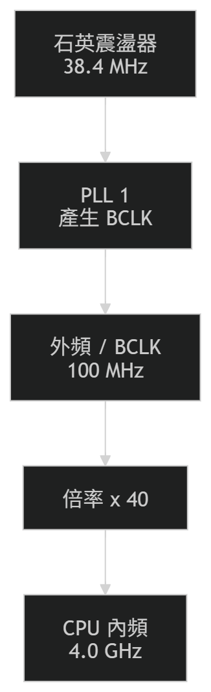
數字怎麼變？
第一步：石英震盪器 → 外頻(BCLK)
- 石英震盪器：38.4 MHz
- 經過 PLL 後
- 變成 BCLK：100 MHz
這代表不是直接拿 38.4 MHz 當 CPU 核心時脈，而是先整理成一個系統常用的基準時脈。Intel 官方資料就是這樣描述的。([Intel CDRD](https://cdrdv2-public.intel.com/631121/631121_TGL%20Datasheet%20Volume1of2%20rev012_PUBLIC.pdf?utm_source=chatgpt.com))
第二步：外頻(BCLK) → 內頻(core frequency)
假設 CPU 倍率(multiplier，倍頻係數) 是 40：
- 100 MHz × 40 = 4000 MHz = 4.0 GHz
所以：
- 外頻 / BCLK = 100 MHz
- 內頻 = 4.0 GHz
這也是常見的 CPU 頻率表示方式： **CPU frequency = BCLK × ratio(倍率)**。ASUS 的 overclocking guide 也明講 base BCLK frequency 是 100 MHz，而 CPU core frequency 由 Turbo Ratio 相乘得到。([@ROG](https://rog.asus.com/articles/overclocking/maximus-v-formula-overclocking-guide/?utm_source=chatgpt.com))
你可以直接這樣記
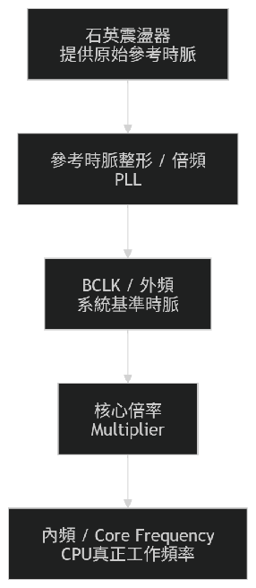
用一句白話講
石英震盪器像最原始的節拍來源，BCLK 像整理過的共同基準節拍，內頻則是 CPU 核心真正跑多快。
你現在最安全的理解
✅ **常見現代 CPU：石英震盪器頻率 < BCLK < 內頻** ✅ **內頻常可寫成：BCLK × 倍率** ✅ **石英震盪器不一定直接等於外頻，也不一定直接等於內頻** ([Intel CDRD](https://cdrdv2-public.intel.com/631121/631121_TGL%20Datasheet%20Volume1of2%20rev012_PUBLIC.pdf?utm_source=chatgpt.com))
一個完整例子
假設：
- 石英震盪器 = 38.4 MHz
- 經 PLL 變成 BCLK = 100 MHz
- CPU 倍率 = 33
那麼：
- 內頻 = 100 MHz × 33 = 3300 MHz = 3.3 GHz
也就是：
38.4 MHz → 100 MHz → 3.3 GHz
這樣就能對上你前面看到的 **3.33 GHz CPU** 那種教材概念，只是教材通常把中間層省略掉了。([Intel CDRD](https://cdrdv2-public.intel.com/631121/631121_TGL%20Datasheet%20Volume1of2%20rev012_PUBLIC.pdf?utm_source=chatgpt.com))
小心一個點
有些老教材把 **外頻** 講成 front-side bus(FSB，前端匯流排時脈)，有些又拿來指 **BCLK**。這兩種說法在不同年代不完全一樣，所以你在課堂上若看到「外頻」這個詞，最好先看老師是在講哪一代架構。這裡我是用**現代常見的 BCLK 觀念**在幫你建立直覺。([邁盛電子](https://www.mouser.com/datasheet/2/612/intel%20corporation_314553-1215887.pdf?srsltid=AfmBOoomkk94f-kH1g_JUeJF_mv76GWrUpCFeD5zDGHV-5rf4N9KA5T8&utm_source=chatgpt.com))
你若要，我下一則我可以直接幫你畫成 「石英震盪器 / 外頻 / 內頻 / 時脈週期」四個量一起對照的表格版。
所以CPU裡面的同步電路就是依照內頻?
可以這樣理解，但要加上一個重要保留：
**在 CPU 核心(core) 裡的同步電路，通常是依照核心時脈(core clock)，也就是你前面說的內頻在運作。** **但整顆 CPU/SoC 不一定全部都用同一個內頻。** ([intel.com](https://www.intel.com/content/www/us/en/gaming/resources/how-to-overclock.html?utm_source=chatgpt.com))
先講你這句話哪裡對
如果你指的是 **CPU 核心裡的 flip-flop、register、pipeline stage**，那大方向是對的。 因為 **core frequency(核心頻率)** 就是 CPU 核心真正工作的頻率，而同步電路會跟著 clock signal(時脈訊號) 在每個 edge(邊緣) 更新狀態。Intel 把核心頻率定義成 **BCLK × Multiplier**，這就是核心運作速度的來源。([intel.com](https://www.intel.com/content/www/us/en/gaming/resources/how-to-overclock.html?utm_source=chatgpt.com))
但要修正一點
不要講成：
CPU 裡面的所有同步電路都依照同一個內頻
這句就太滿了。 因為現代 CPU/SoC 常有多個 **clock domains(時脈網域)**，不同模組可能用不同的 clock。Cadence 的 CDC 文件直接指出，現代 SoC 通常包含 **multiple asynchronous clock domains**。([cadence.com](https://www.cadence.com/content/dam/cadence-www/global/en_US/documents/tools/system-design-verification/clock-domain-crossing-verification-wp.pdf?utm_source=chatgpt.com))
所以更精準是：
- CPU 核心內部的同步電路：通常依照核心時脈，也就是內頻
- 其他模組，像記憶體控制器、PCIe、內顯，不一定跟核心同一個時脈。(edc.intel.com)
最白話版本
你可以把它想成：
- 核心裡的電路：跟著核心自己的節拍跑
- 其他模組：可能跟著別的節拍跑
所以你的句子可以改成：
CPU 核心裡面的同步電路，通常是依照內頻所對應的核心時脈在運作。
這樣最準。
一句話背法
對，CPU 核心內的同步電路通常跟著內頻；但整顆 CPU 不一定只有一種時脈。
⭐ 下一步最適合的是：我幫你把「核心內部」和「整顆 CPU/SoC」的時脈差別畫成一張小圖。
所以一個 CPU 有不同的內頻嗎，是不是用相同的BCLK乘上不同的倍頻
對，有可能，但要分清楚你說的是：
- 整顆 CPU/SoC
- 單一核心(core)
結論先講
**整顆 CPU 裡，確實可能有不同模組跑在不同頻率。** 而在很多情況下，**這些頻率可以理解成同一個 BCLK 再乘上不同倍率／比率(ratio)**，但**不一定所有模組都完全共用同一組公式**。Intel 官方時脈拓樸就寫得很清楚：**BCLK 會驅動 Core、Ring、Graphics、Memory Controller、System Agent 等 clock domains**；另外 **PCIe** 還有自己的 reference clock。([Intel](https://edc.intel.com/content/www/us/en/design/products/platforms/details/raptor-lake-s/13th-generation-core-processors-datasheet-volume-1-of-2/002/002/clock-topology/?utm_source=chatgpt.com))
先回答你最核心的問題
一個 CPU 有不同的內頻嗎？
可以這樣說，但要更精準。
如果你把「內頻」理解成「CPU 內部各模組真正工作的頻率」，那答案是 有可能有很多種，例如：
- 核心 Core 頻率
- Ring / Interconnect 頻率
- Graphics 頻率
- Memory Controller 頻率
Intel 官方就明講這些都是不同的 **clock domains**。([Intel](https://edc.intel.com/content/www/us/en/design/products/platforms/details/raptor-lake-s/13th-generation-core-processors-datasheet-volume-1-of-2/002/002/clock-topology/?utm_source=chatgpt.com))
但如果你把「內頻」只限定成「某個 CPU 核心的 core frequency」，那通常是在講核心頻率，不一定把其他模組也叫內頻。
是不是用相同的 BCLK 乘上不同的倍頻？
很多時候是這樣理解，尤其在核心頻率上。
Intel 官方直接寫：
**CPU Core Frequency = BCLK × Multiplier**。([Intel](https://www.intel.com/content/www/us/en/gaming/resources/how-to-overclock.html?utm_source=chatgpt.com))
而且 BIOS 超頻文件也說，CPU core ratio / multiplier 通常可以 per core(每核心) 或 all cores(全核心) 設定。這代表：
- 同一個 BCLK
- 不同核心可以用不同 multiplier
- 所以不同核心可以有不同 core frequency。(Intel)
最白話的理解
你可以想成：
- BCLK = 全班共用的基準節拍
- Multiplier = 每組自己用不同齒輪比
- 最後頻率 = 每組實際跑的速度
所以有可能出現：
- Core 0 跑比較高
- Core 1 跑比較低
- Ring 又是另一個速度
- Graphics 又是另一個速度
這在現代 CPU 很合理，因為不同模組需求不同。([Intel](https://edc.intel.com/content/www/us/en/design/products/platforms/details/raptor-lake-s/13th-generation-core-processors-datasheet-volume-1-of-2/002/002/clock-topology/?utm_source=chatgpt.com))
flowchart TB
A\[BCLK\<br\>共同基準時脈\] \--\> B\[Core 0 ratio\]
A --> C[Core 1 ratio]
A --> D[Ring ratio]
A --> E[GT ratio]
B --> F[Core 0 frequency]
C --> G[Core 1 frequency]
D --> H[Ring frequency]
E --> I[Graphics frequency]
但有一個重要修正
不要講成「整顆 CPU 裡所有頻率都一定只是同一個 BCLK × 不同倍頻」。 原因是 Intel 官方也明講，除了 BCLK 外，還有：
- PCIe reference clock (PCTGLK) = 100 MHz
- Fixed clock / crystal clock = 38.4 MHz。(Intel)
所以更精準是：
很多 CPU 內部頻率是從 BCLK 派生出來，但不是所有時脈都必然只靠同一個 BCLK。
社群經驗也支持這個理解
Reddit 超頻討論常提到：
- 改 BCLK 會連記憶體、PCIe 等一起受影響
- 改 multiplier 通常比較集中在核心速度
- 有些平台可以 per-core ratio，不同核心頻率就會不同。(Reddit)
這和 Intel 官方說法是對得上的。
你現在最安全的說法
你可以直接背這句：
**一顆 CPU 內可能有多個 clock domains，所以不同核心或不同模組可能有不同工作頻率；很多情況下它們可視為由同一個 BCLK 再配合不同倍頻／比率產生，但也可能另外使用其他 reference clock。** ([Intel](https://edc.intel.com/content/www/us/en/design/products/platforms/details/raptor-lake-s/13th-generation-core-processors-datasheet-volume-1-of-2/002/002/clock-topology/?utm_source=chatgpt.com))
再壓成一句話
**對，常常是同一個 BCLK 配不同倍頻，所以不同核心／模組可以有不同頻率；但整顆 CPU 不一定所有時脈都只來自同一個 BCLK。** ([Intel](https://edc.intel.com/content/www/us/en/design/products/platforms/details/raptor-lake-s/13th-generation-core-processors-datasheet-volume-1-of-2/002/002/clock-topology/?utm_source=chatgpt.com))
⭐ 下一步最適合的是：我幫你把 「單一核心的內頻」 和 「整顆 CPU 的多個 clock domains」 畫成兩張對照圖。
影響 CPU 效能的因素
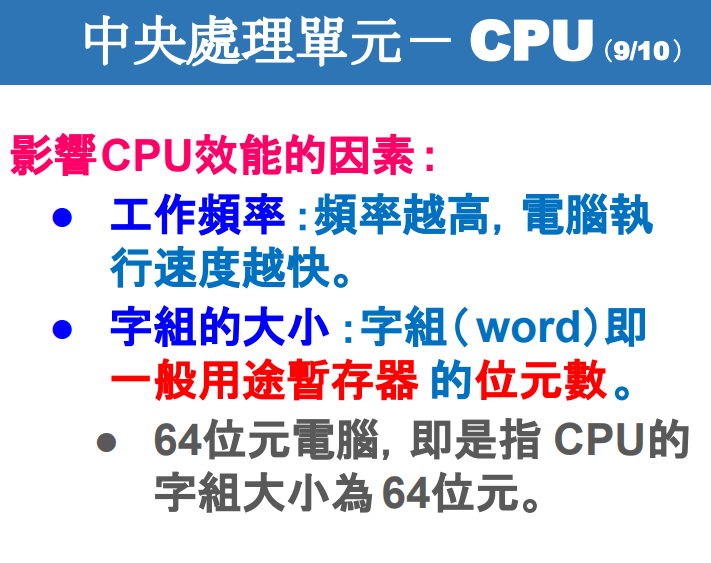
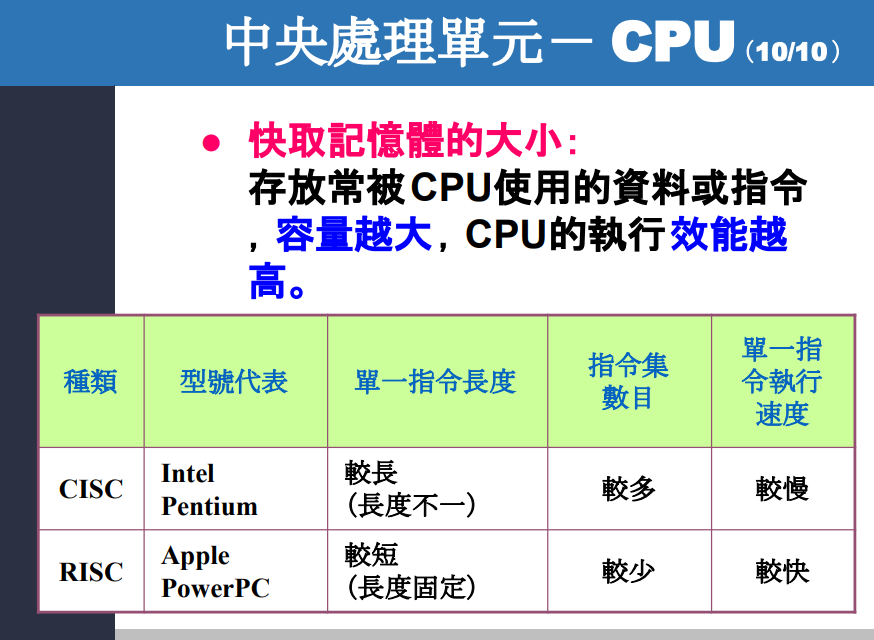
這兩張投影片在講什麼
這兩張其實是在講：影響 CPU 效能 (performance) 的幾個主要因素。 第一張講的是：
- 工作頻率 (clock rate / 時脈頻率)
- 字組大小 (word size / 字長)
第二張補上：
- 快取記憶體大小 (cache size)
- 指令集設計 (instruction set / ISA)
這些內容都出現在你這份課程投影片裡。
第一張：工作頻率為什麼會影響效能？
投影片寫的是：頻率越高，電腦執行速度越快。 這句話在入門課可以先這樣記，但要補一個更精確的版本：
頻率高，代表每秒能提供更多 clock cycles(時脈週期)，所以在其他條件相近時，通常能做更多事；但不代表一定比較快。
因為 CPU 真正效能通常還跟這幾件事一起決定：
- 每個 cycle 能做多少工作
- 指令要花幾個 cycle
- 記憶體有沒有拖慢
- 程式能不能平行化
- CPU 架構本身設計好不好
所以你可以把它想成：
- clock rate(頻率) 像是工廠「打鐘」的速度
- 鐘打得越快，工人越常開始下一步
- 但如果工人常常在等材料，那光打鐘快也沒用
這也是為什麼現在 CPU 不再只靠拉高 GHz 來提升效能，而是靠快取、核心數、分支預測、管線化、亂序執行等設計一起提升。Intel 文件也明確把 cache 與核心層級設計列為影響整體處理器表現的重要部分。([Intel CDRD](https://cdrdv2-public.intel.com/655258/655258-011.pdf?utm_source=chatgpt.com))
第一張：字組大小 word 是什麼？
投影片說：
字組 (word) 即一般用途暫存器的位元數 64 位元電腦，就是指 CPU 的字組大小為 64 位元
這個說法在基礎課可以先這樣理解，大方向是對的。
你可以先把 word(字組 / 字長) 理解成：
CPU 一次最自然、最擅長處理的資料寬度
例如：
- 32-bit CPU：一次處理 32 位元比較自然
- 64-bit CPU：一次處理 64 位元比較自然
生活化一點：
- 32-bit 像一次搬 32 本小卡片
- 64-bit 像一次搬 64 本小卡片
- 一次搬得更多，某些運算或位址處理就更有效率
但這裡要注意一個常見誤解：
64 位元不等於所有程式都自動變快
它通常代表：
- 通用暫存器 (general-purpose registers) 寬度更大
- 可處理更大的整數
- 可支援更大的位址空間 (address space)
所以它對：
- 大記憶體應用
- 大數運算
- 某些高效能程式
常常有幫助。 但若只是很簡單的小程式，未必因為「64 位元」就明顯更快。x86 架構從 16、32 到 64 位元一路演進，現在的 x86-64 也明確是 64-bit 架構。([維基百科](https://en.wikipedia.org/wiki/X86?utm_source=chatgpt.com))
第二張：快取記憶體 cache 為什麼重要？
投影片寫：
存放常被 CPU 使用的資料或指令，容量越大，CPU 的執行效能越高。
這句也要加一點精確版本：
cache(快取) 的作用是降低 CPU 去主記憶體 DRAM 抓資料的次數。 因為 CPU 很快，DRAM 相對慢，所以如果常用資料能先放在 cache，中間等待時間就會少很多。
你可以想成：
- 暫存器 register：桌上正在拿來寫的筆
- cache：手邊抽屜
- 主記憶體 RAM：房間書櫃
手邊抽屜越夠用，越不用一直跑去書櫃拿東西。 所以 cache 通常能顯著影響效能，尤其是：
- 重複存取相同資料
- 資料區域性很強
- 程式很吃記憶體存取
但也不是「越大一定線性越快」，因為還有：
- cache latency(存取延遲)
- associativity(相聯度)
- cache hierarchy(L1/L2/L3 層級)
- 程式存取模式
Intel 官方文件也列出現代處理器的 L1/L2/LLC 配置，顯示 cache 是 CPU 架構的重要部分。([Intel CDRD](https://cdrdv2-public.intel.com/655258/655258-011.pdf?utm_source=chatgpt.com))
第二張：CISC 與 RISC 在講什麼？
投影片表格大意是：
-
CISC (Complex Instruction Set Computer，複雜指令集) 指令較複雜、長度常不固定、指令種類較多
-
RISC (Reduced Instruction Set Computer，精簡指令集) 指令較簡單、常固定長度、較容易做管線化與高效率執行
這個方向是對的。Arm 官方文件指出，**A64 指令集是 fixed-length 32-bit instruction set(固定 32 位元長度指令集)**；而 x86 則是典型 **variable-length instruction encoding(可變長度編碼)**。([developer.arm.com](https://developer.arm.com/documentation/ddi0487/maa/-Part-C-The-AArch64-Instruction-Set/-Chapter-C1-The-A64-Instruction-Set/-C1-1-About-the-A64-instruction-set?utm_source=chatgpt.com))
但這張表有一個你要特別知道的地方：它有點過度簡化
投影片上寫：
- CISC：Intel Pentium
- RISC：Apple PowerPC
- CISC 指令較慢、RISC 指令較快
這在教學入門上可以接受，但若從比較嚴格的計算機結構角度來看，這樣講太簡化了。
1. 「RISC 指令一定比較快」不夠精確
真正該說的是：
RISC 常藉由較簡單、規則的指令格式，讓硬體更容易做 pipeline(管線化)、decode(解碼) 與高吞吐量設計。
不代表每一條 RISC 指令在所有情況都一定比較快，也不代表 CISC 一定慢。現代 x86 CPU 內部常把複雜 x86 指令再轉成較簡單的 micro-ops(微操作) 來執行，所以現代 CPU 的實作其實比教科書分類複雜很多。Intel 官方 SDM 也顯示 x86 指令集龐大且編碼複雜。([Intel CDRD](https://cdrdv2-public.intel.com/671110/325383-sdm-vol-2abcd.pdf?utm_source=chatgpt.com))
2. 「RISC 指令集數目較少」也不是永遠成立
RISC 的「reduced」重點不是單純指「指令總數一定少」，而是**單一指令完成的工作較簡單**。這點在 RISC 的說明中也有提到。([維基百科](https://en.wikipedia.org/wiki/Reduced_instruction_set_computer?utm_source=chatgpt.com))
3. Apple PowerPC 已經不是現在 Apple 主流 CPU
這張投影片用 **Apple PowerPC** 當 RISC 代表，是早期教材常見例子，但現在 Apple 主流已是 **Apple Silicon(M 系列，基於 Arm 架構)**，不是 PowerPC。這點你在讀投影片時要知道它是**歷史例子**，不是現在最新現況。([developer.arm.com](https://developer.arm.com/documentation/102374/latest/Instruction-sets-in-the-Arm-architecture?utm_source=chatgpt.com))
你可以把第二張表格改記成這個版本
| 類型 | 核心概念 |
|---|---|
| CISC | 指令功能較複雜，編碼常可變長，代表例子是 x86 |
| RISC | 指令較規則、常固定長度、常採 load-store 架構，代表例子是 Arm/AArch64、RISC-V |
這樣會比「CISC 慢、RISC 快」更準。
這兩張你考試可以怎麼背？
先背成 4 個關鍵字：
- Clock rate(工作頻率)：每秒時脈越多，通常越能做更多事
- Word size(字組大小)：CPU 最自然的資料寬度，64-bit 代表暫存器與位址能力更強
- Cache size(快取容量)：常用資料放近一點，減少等主記憶體
- ISA / Instruction set(指令集)：影響解碼、管線、硬體設計效率
一張圖幫你整理
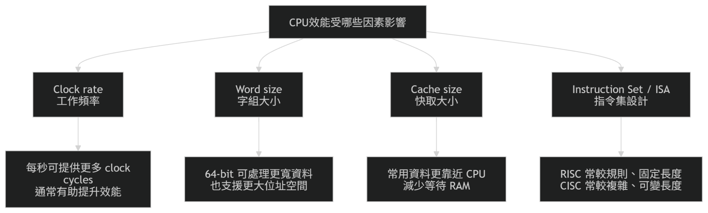
你這兩張最容易搞混的點
1. 字組大小不是「記憶體容量」
它是在講 CPU 資料寬度，不是 RAM 幾 GB。
2. 快取大不代表一定全面碾壓
要看程式有沒有吃到 cache locality(區域性)。
3. GHz 高不等於一定比較快
還要看架構、IPC(instructions per cycle，每週期指令數)、cache、核心數。
4. CISC/RISC 是架構哲學，不是簡單的快慢二分法
現代 CPU 很多都已經把兩邊概念混得很深。
這段如果你要用一句話記
CPU 效能不只看 GHz，還要看字長、快取與指令集設計；而 CISC/RISC 的差別重點在指令設計哲學，不是單純誰一定快。
你如果要，我下一則可以直接幫你把這兩張整理成「考試版筆記」，用 5 分鐘能背完的格式。
記憶體
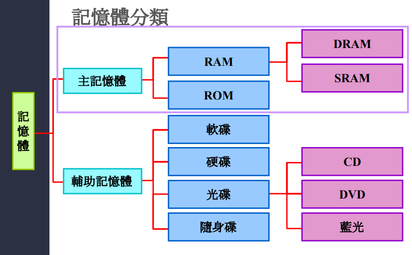
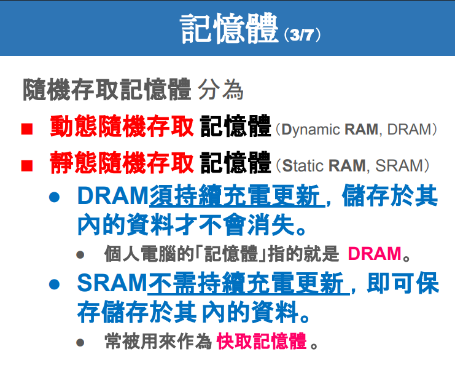
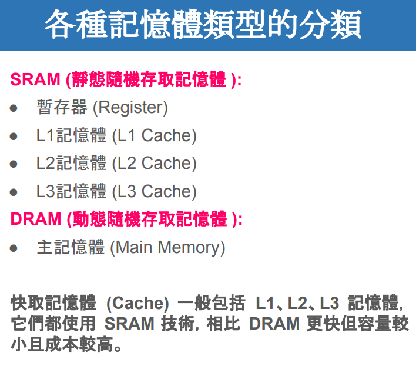
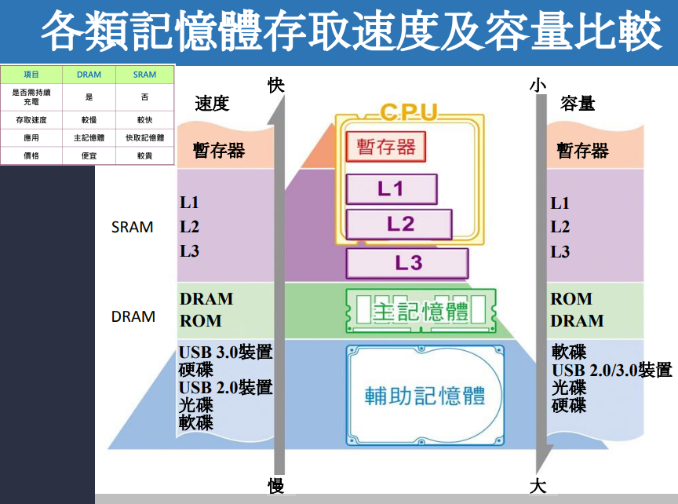
重點
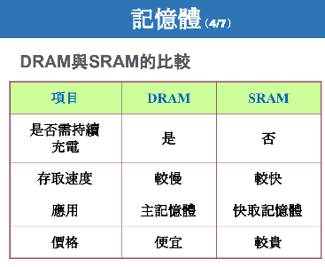
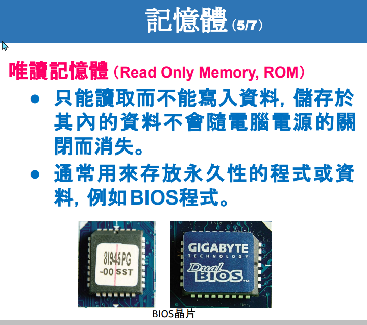